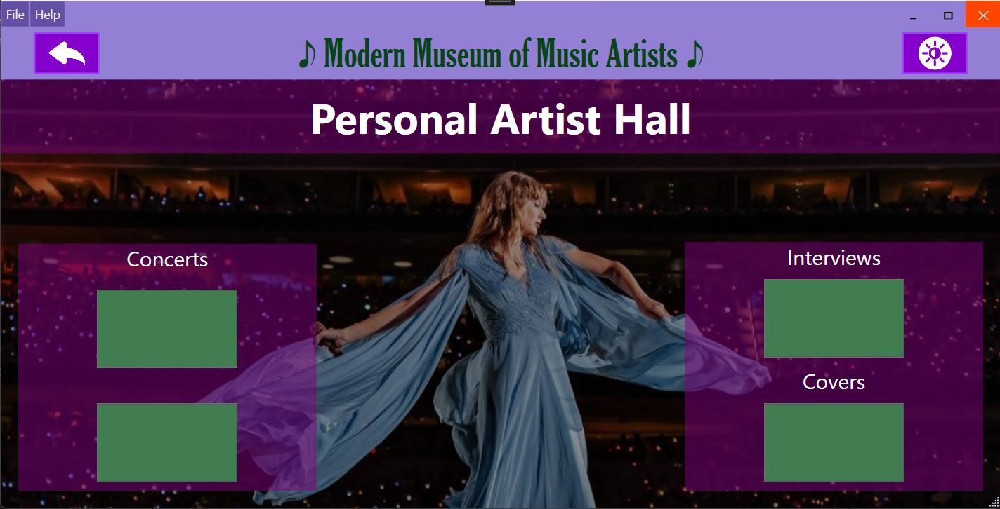
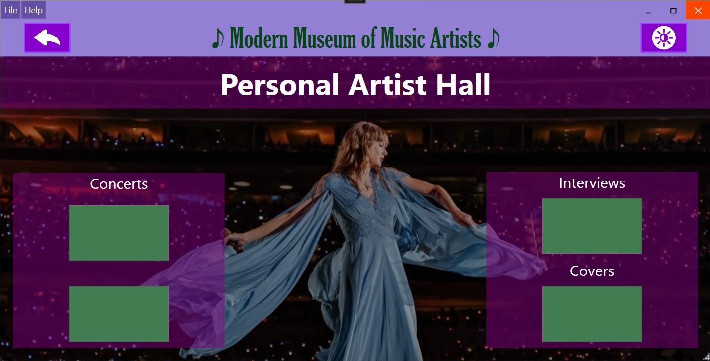

Welcome to the Museum's help page!
Here you can find resources that will assist you with anything that has to do with the museum's application! In the case you still have questions or need help, despite the page's offerings, you can contact museum staff for assistance.
Application Layout
The museum's application has 4 applets that each serve a different function and provide the visitors with a whole and unique experience! The applets, in short, are:
-
Museum Concerts
Visitors can see upcoming concerts of featured artists taking place in the Museum's concert hall! This applet provides the means to book tickets to any of these concerts.
-
Exhibition Hall
This applet features pages dedicated to the Museum's artists, giving the visitors a quick history lesson whilst simultaneously playing a song from each artist's discography!
-
Viewing Room
Simillar to the exhibition hall, this applet has dedicated pages to each artist. In this room however, visitors can see videos of the artists in-concert, or interviews, or even covers!
-
Digital DJ
Here the visitors get to have fun! With the ability to rent out one of the Museum's private concert rooms, visitors can use the Digital DJ applet and make their own concerts with friends and family! Dancing, singing with karaoke and a light show are just some of the features of this applet!
Museum Concerts


Exhibition Hall

Viewing Room
 


Digital DJ